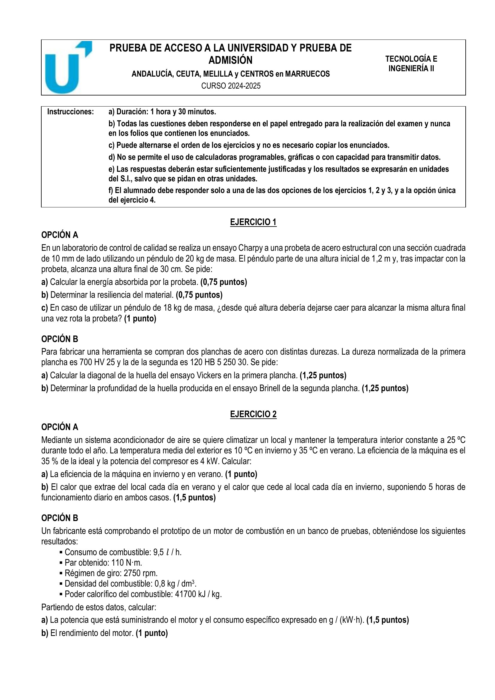
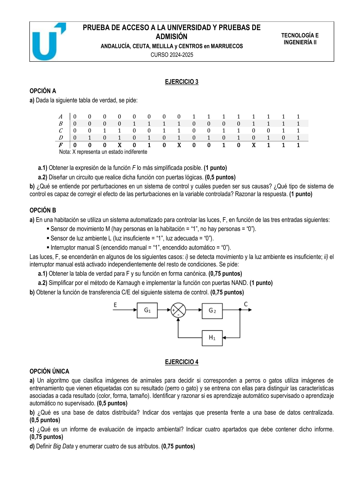

⏱️ 90 min · 4 ejercicios · 3 con opciones A/B
← Volver al índice


1A-a) E = m·g·(h₀−h_f) = 20·9,81·0,9 ≈ 176,58 J
1A-b) Sección cuadrada 10 mm (sin entalla explícita en el enunciado): A = 1 cm² → ρ ≈ 176,58 J/cm² · (Si entalla 2 mm: A_neta = 0,8 cm² → ρ ≈ 220,7 J/cm²)
1A-c) Con m'=18 kg y mismo h_f = 0,3 m: h₀' = h_f + E/(m'·g) = 0,3 + 176,58/(18·9,81) ≈ 1,30 m
1B-a) 700 HV 25 → F = 25 kp: d = √(1,854·F/HV) = √(1,854·25/700) ≈ 0,2573 mm
1B-b) 120 HB 5/250/30: h = F/(π·D·HB) = 250/(π·5·120) ≈ 0,1326 mm
2A-a) Invierno (BC): COP_ideal = 298/(298−283) ≈ 19,87 · COP_inv = 0,35·19,87 ≈ 6,95 · Verano (frig): COP_ideal = 298/(308−298) ≈ 29,80 · COP_ver = 0,35·29,80 ≈ 10,43
2A-b) W_día = 4 kW · 5 h · 3600 = 72 000 kJ · Verano: Q_extraído = COP_ver·W ≈ 750,96 MJ/día · Invierno: Q_cedido al local = COP_inv·W ≈ 500,64 MJ/día
2B-a) P = M·ω = 110·2π·2750/60 ≈ 31,68 kW · Consumo = 9,5·0,8·1000 = 7600 g/h · Ce = 7600/31,68 ≈ 239,9 g/(kW·h)
2B-b) P_comb = 9,5·0,8·41700/3600 ≈ 88,05 kW · η = P/P_comb ≈ 35,98 %
3A-a) Con don't cares (X en m3,m7,m12), por Karnaugh F = B·D + A·C·D̅ · Implementación con puertas AND, OR y NOT
3A-b) Perturbaciones: señales externas no deseadas (ruido, variaciones ambientales, cargas) que alteran la salida. El sistema de lazo cerrado las corrige porque realimenta la salida real al comparador
3B-a) F = 1 si (M·L) o S → F = Σm(1,3,5,6,7) · Canónica con 3 variables M,L,S
3B-b) Simplificación por Karnaugh: F = M·L + S · Implementación con puertas NAND por doble inversión
a) Aprendizaje supervisado: algoritmo entrenado con datos ya etiquetados (perro/gato). El caso descrito es supervisado porque las imágenes llevan etiqueta de clase
b) Base de datos distribuida: datos repartidos en varios nodos físicos pero gestionados como un único sistema lógico. Ventajas: alta disponibilidad, escalabilidad, menor latencia local
c) Evaluación de impacto ambiental: documento que analiza los efectos de un proyecto sobre el medio. Apartados: descripción del proyecto, inventario ambiental, identificación de impactos, medidas correctoras
d) Big Data: gestión de grandes volúmenes de datos. Atributos (5V): volumen, velocidad, variedad, veracidad, valor